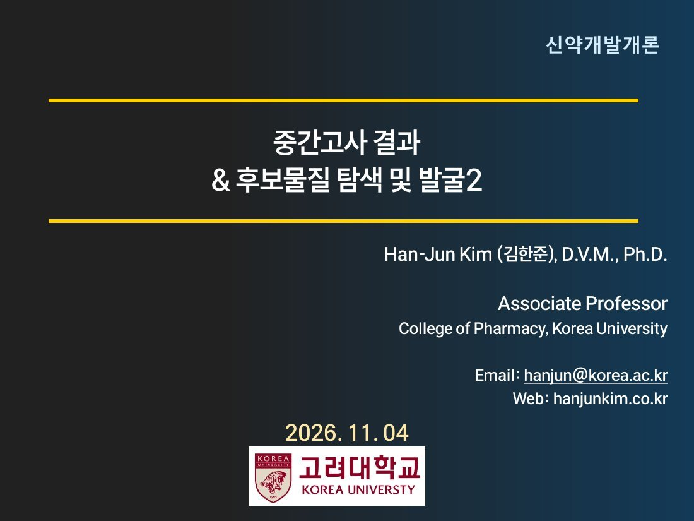
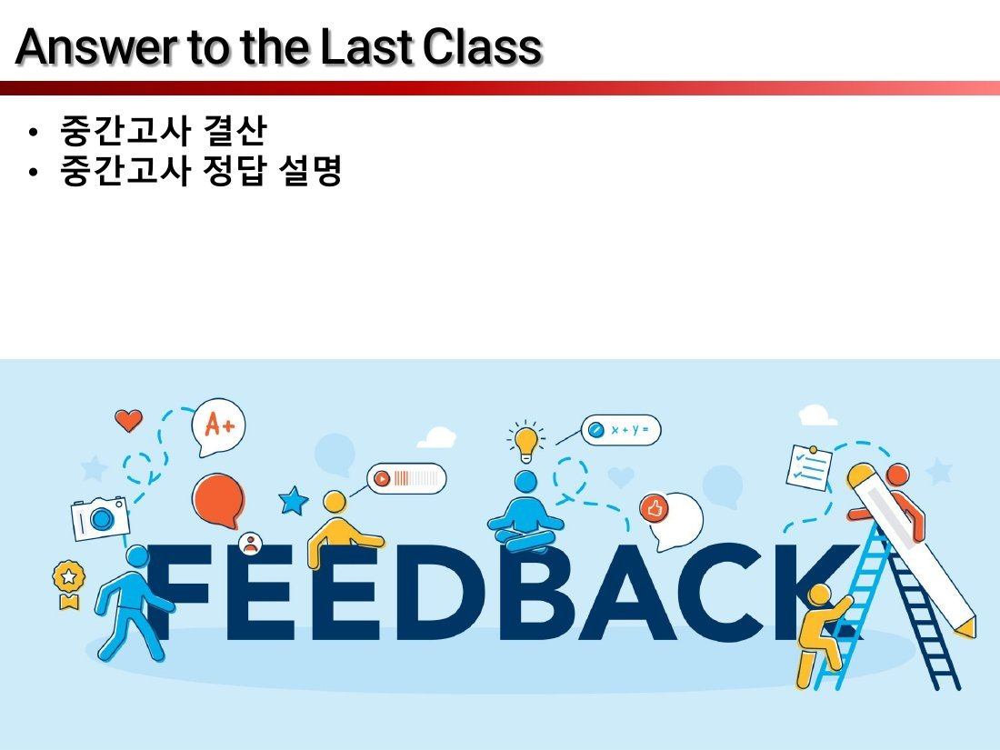

앞부분은 중간고사 결산·정답 설명, 본론은 지난 시간 Chapter 3-2의 이어지는 부분 — HTS 이후 Hit 도출 → Lead 도출 → Lead 최적화 → UCL 로드맵 → AI 신약이야.
“Questions?” 슬라이드(3·33)는 내용이 없어 뺐고, HTS 영상(6·7)과 Deep Learning·분자 그림(30·31)은 각각 한 페이지로 묶었어.
슬라이드 5~32는 6주차 자료 31~58과 똑같아. 6주차에 다 못 나간 부분을 이번에 이어서 했어.
| 파트 | 이번 슬라이드 | 6주차 슬라이드 | 이 노트 |
|---|---|---|---|
| 중간고사 결산·정답 설명 | 2 | — | 2쪽 |
| Chapter 3-2 표지 | 4 | 11 | 3쪽 |
| 4. Hit 도출 (Screening) | 5~13 | 31~39 | 4~11쪽 |
| 5. Lead 도출 (Hit to Lead) | 14~17 | 40~43 | 12~15쪽 |
| 6. Lead Optimization | 18~21 | 44~47 | 16~19쪽 |
| UCL Roadmaps | 22~28 | 48~54 | 20~26쪽 |
| Deep Learning · AI · 영상 | 29~32 | 55~58 | 27~29쪽 |
시험 범위 연결: 중간고사는 6주차 p.33 HTS까지(= 이번 슬라이드 7)였어. 그러니까

슬라이드에는 “중간고사 결산 · 중간고사 정답 설명” 두 줄과 FEEDBACK 그림만 있어. 점수·정답은 수업 중에 말로 설명했으니, 여기선 내 시험 기록을 바탕으로 정리했어.
그림: FEEDBACK 글자 주위로 사람들이 사다리·연필·말풍선(A+ 등)을 들고 있는 일러스트 — 시험 피드백 시간이라는 뜻이야.
슬라이드에 점수 분포·문항별 정답은 없어. 수업에서 들은 정답 설명이 있으면 시험기록.md에 적어두자.
2026 중간고사 형식 (10/21 응시, 1~6주차, 6주차는 p.33 HTS까지)
| 2024 | 2025 | 2026 | |
|---|---|---|---|
| 객관식 | 약 17 | 약 13 + O/X | 26 |
| 단답 | 약어·용어 몇 개 | 약어·빈칸·이유 | 14 |
| 서술 | 있음 | 있음 (5개 쓰기) | 없음 |
체감: 통합 모의고사와 비슷했지만
기말 대비 (기말 45%)